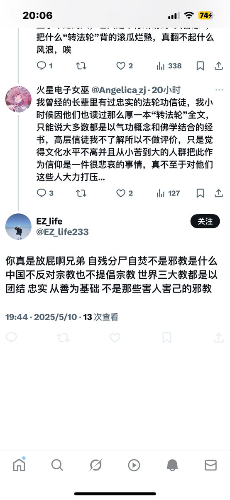

火星电子女巫
@Angelica_zj
况且更应该控制的是某头子和高层信徒吧，以上也都是十几年前的事了，如今也大概率不会发生原帖图上的情况。我觉得还是应该像现在这样施以劝告和训诫更好，不要对手无寸铁的百姓武力压制，何苦为难底层人@EZ_life233

火星电子女巫
@Angelica_zj
我想表达的是底层信徒也是受害者，苦一辈子没有分辨能力也没几年活头，自焚的是绝对少数，他们所能接触到的“教义”里从来没有提过这些内容
对他们大力的打压反而最危害生命，小时候见过不少六旬老人因为发放相关传单反反复复被抓进局子又给放出来，以前的司法系统又不完善，出来一脸的伤，挺令人唏嘘的 https://t.co/94ccNAlmQG